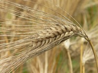

六条大麦の生産量 都道府県ランキング
全32都道府県の順位と収穫量
六条大麦の収穫量が全国で最も多いのは福井県で、1万6,700 tです。全国（5万9,000 t）の28%を占めます。

| 順位 | 都道府県 | 収穫量 | 全国に占める割合 |
|---|---|---|---|
| 1位 | 福井県 | 1万6,700 t | 28% |
| 2位 | 富山県 | 1万 t | 17% |
| 3位 | 滋賀県 | 6,200 t | 11% |
| 4位 | 石川県 | 5,610 t | 9.5% |
| 5位 | 宮城県 | 4,990 t | 8.5% |
| 6位 | 栃木県 | 3,930 t | 6.7% |
| 7位 | 茨城県 | 2,540 t | 4.3% |
| 8位 | 長野県 | 2,190 t | 3.7% |
| 9位 | 兵庫県 | 1,940 t | 3.3% |
| 10位 | 群馬県 | 1,630 t | 2.8% |
| 11位 | 埼玉県 | 556 t | 0.9% |
| 12位 | 岐阜県 | 465 t | 0.8% |
| 13位 | 新潟県 | 458 t | 0.8% |
| 14位 | 愛知県 | 442 t | 0.7% |
| 15位 | 青森県 | 334 t | 0.6% |
| 16位 | 三重県 | 244 t | 0.4% |
| 17位 | 岩手県 | 199 t | 0.3% |
| 18位 | 千葉県 | 126 t | 0.2% |
| 19位 | 北海道 | 85 t | 0.1% |
| 20位 | 山梨県 | 78 t | 0.1% |
| 21位 | 長崎県 | 56 t | 0.1% |
| 22位 | 広島県 | 50 t | 0.1% |
| 23位 | 山形県 | 27 t | 0.0% |
| 24位 | 大分県 | 23 t | 0.0% |
| 25位 | 福島県 | 16 t | 0.0% |
| 26位 | 島根県 | 10 t | 0.0% |
| 27位 | 宮崎県 | 8 t | 0.0% |
| 28位 | 熊本県 | 4 t | 0.0% |
| 29位 | 徳島県 | 2 t | 0.0% |
| 30位 | 和歌山県 | 1 t | 0.0% |
| 31位 | 鳥取県 | 1 t | 0.0% |
| 32位 | 岡山県 | 1 t | 0.0% |
PR

六条大麦の生産量の推移（令和3年産〜令和7年産）
全国の収穫量は、令和3年産の5万5,100 tから令和7年産の5万9,000 tへ、7%増えました。期間中、1位は一貫して福井県です。
| 年 | 全国 | 1位 | 2位 | 3位 |
|---|---|---|---|---|
| 令和7年産 | 5万9,000 t | 福井県1万6,700 t | 富山県1万 t | 滋賀県6,200 t |
| 令和6年産 | 5万4,100 t | 福井県1万2,100 t | 富山県1万1,600 t | 石川県6,090 t |
| 令和5年産 | 6万4,400 t | 福井県1万6,100 t | 富山県1万3,200 t | 石川県6,390 t |
| 令和4年産 | 6万5,100 t | 福井県1万8,100 t | 富山県1万3,400 t | 石川県6,130 t |
| 令和3年産 | 5万5,100 t | 福井県1万3,300 t | 富山県1万200 t | 滋賀県5,030 t |
この数字について
- 分類：イネ科
- 全国の収穫量：5万9,000 t
- この数字が表すもの：収穫量（収穫された重量）
- 調査：作物統計調査 作況調査（麦・豆・工芸農作物ほか） 令和7年産
- 32県分を調査（調査していない県は順位に入りません）
六条大麦の生産量について、よくある質問
- 六条大麦の生産量が日本一の都道府県はどこですか？
- 福井県です。作物統計調査 作況調査（麦・豆・工芸農作物ほか）（令和7年産）で1万6,700 tでした。
- 六条大麦の生産量ランキング2位・3位はどこですか？
- 2位は富山県（1万 t）、3位は滋賀県（6,200 t）です。
- 六条大麦の生産量ランキング4位・5位はどこですか？
- 4位は石川県（5,610 t）、5位は宮城県（4,990 t）です。六条大麦の全32県の順位は上の表のとおりです。
- 六条大麦の全国の生産量はどれくらいですか？
- 5万9,000 t（令和7年産）です。
米・麦・豆の生産量 ランキング一覧（米・麦・豆の全品目の1〜3位）